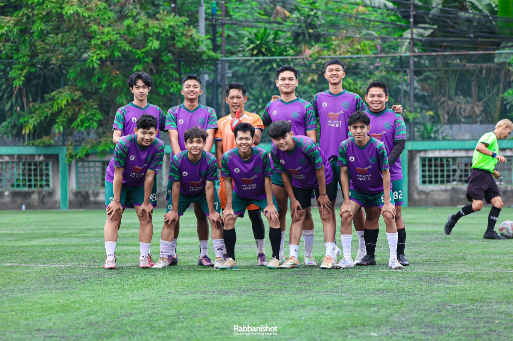
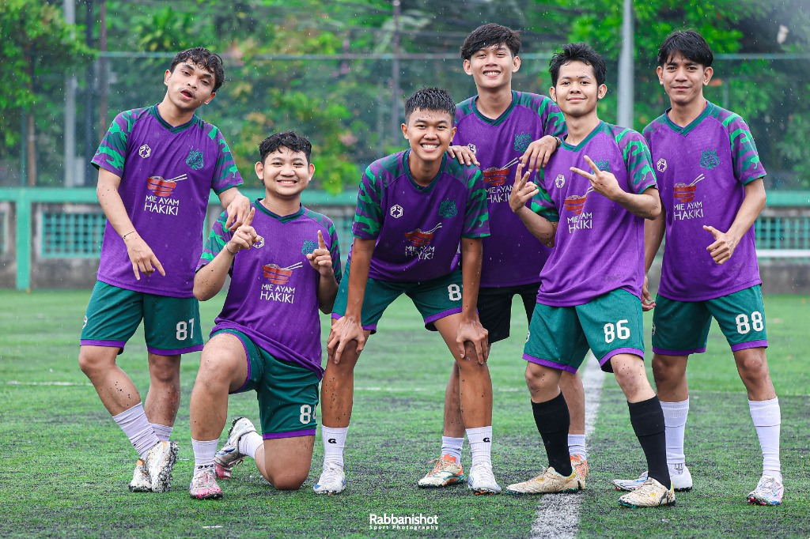
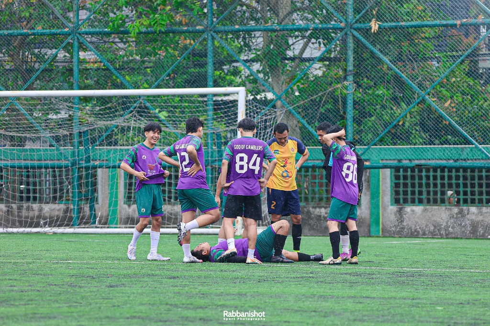
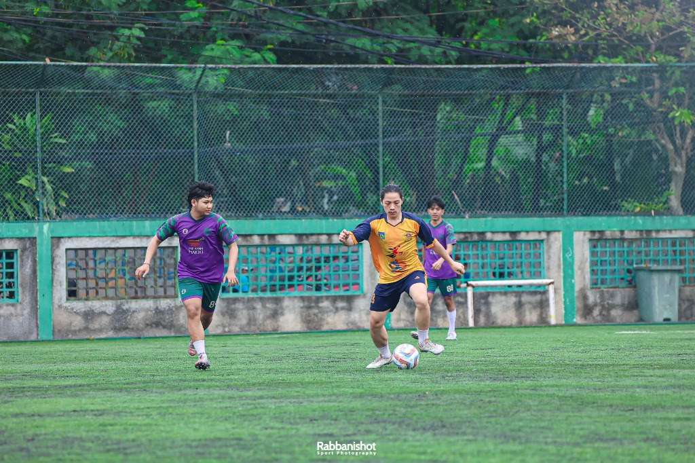

Olahraga yang seru, butuh kerja sama tim, dan bikin nagih. Yuk kenalan sama futsal — dari teknik dasar sampai jadwal tanding!
Lapangan kecil bikin permainan jadi cepat dan intens. Susah buat santai-santai.
Tiap gerakan perlu koordinasi sama rekan. Melatih pengambilan keputusan cepat.
Cuma 5 orang, peran tiap pemain penting banget. Kalau kompak, hasilnya beda.
1 jam futsal bisa bakar sampai 600 kalori. Lebih seru dari joging sendirian.
Ini bedanya, biar ga ketuker:
| Aspek | Futsal | Sepak Bola |
|---|---|---|
| Jumlah Pemain | 5 orang | 11 orang |
| Ukuran Lapangan | 25–42 m × 16–25 m | 90–120 m × 45–90 m |
| Tempat Main | Indoor / outdoor | Outdoor (biasanya) |
| Durasi | 2 × 20 menit (waktu bersih) | 2 × 45 menit |
| Ukuran Bola | Nomor 4 (lebih berat) | Nomor 5 |
| Throw-in | Tendangan ke dalam | Lemparan tangan |
Skill yang perlu dikuasai sebelum turun ke lapangan. Fokus dulu ke kualitas, baru ngomongin taktik.
Operan adalah yang paling sering dipakai di futsal. Pake bagian dalam kaki buat operan pendek yang akurat. Karena lapangannya sempit, passing cepat dan tepat jadi senjata utama.
Di futsal sering pakai telapak kaki (sole) buat ngehentiin bola. Kontrol yang bersih bikin bola susah direbut lawan, kontrol buruk = bola gampang hilang.
Dribbling di futsal itu pendek-pendek aja, jangan terlalu jauh dari badan. Jangan kelamaan nggiring karena ruangnya sempit and lawan bisa langsung nutup.
Tembakan harus akurat dan kencang. Pake punggung kaki buat tembakan keras, atau sisi dalam kaki kalau mau lebih akurat. Jarak ke gawang relatif dekat di futsal.
Bertahan itu tugas semua pemain, bukan cuma pemain belakang. Posisi badan rendah, jangan asal tekel, dan selalu bayangin pergerakan lawan.
Tendangan sudut atau free kick di futsal bisa langsung berbahaya karena lapangan kecil. Latih variasi tendangan bebas supaya lawan ga bisa tebak arahnya.
Tiap posisi punya peran berbeda dalam 1 tim futsal.
| Posisi | Tugas | Skill Utama | Catatan |
|---|---|---|---|
| Kiper (GK) | Jaga gawang, bagi bola | Refleks, distribusi | Ikut menyerang saat power play |
| Anchor | Atur tempo, cover defense | Passing, visi lapangan | Otaknya tim di lapangan |
| Flank (kiri/kanan) | Serang dari sayap | Dribbling, kecepatan | Harus punya stamina tinggi |
| Pivot | Cetak gol, buka ruang | Shooting, kontrol badan | Posisi paling dekat gawang musuh |
Jadwal rutin mingguan dan rekap hasil pertandingan tim VOLTA. Wajib datang tepat waktu, jangan sering izin!
| Hari | Waktu | Tempat | Materi | Peserta |
|---|---|---|---|---|
| Selasa | 19.00 – 21.00 | GOR Futsal Merdeka | Passing & kontrol bola | Semua anggota |
| Kamis | 19.00 – 21.00 | GOR Futsal Merdeka | Taktik & set piece | Semua anggota |
| Sabtu | 08.00 – 10.00 | Arena Futsal Stadiun | Scrimmage / uji coba | Tim inti + cadangan |
| Minggu | 16.00 – 17.30 | Lapangan Komunitas | Fisik & stamina | Opsional |
4
Menang
2
Seri
1
Kalah
28
Total Gol
Rekap hasil tanding semester ini.
| Tanggal | Lawan | Skor | Tempat | Hasil |
|---|---|---|---|---|
| 10 Feb 2025 | Tim Rajawali FC | 5 - 3 • Dimas (2), Reza, Jefri, Kevin | GOR Futsal Merdeka | Menang |
| 22 Feb 2025 | Garuda Muda | 2 - 2 • Witan, Evan | Arena Futsal Stadiun | Seri |
| 8 Mar 2025 | Bintang Timur FC | 4 - 1 • Egy (2), Arhan, Ramadhan | GOR Futsal Merdeka | Menang |
| 21 Mar 2025 | Meteor United | 1 - 3 • Saddil | Lap. Komunitas | Kalah |
| 5 Apr 2025 | Cobra Futsal Club | 6 - 2 • Dimas Drajad (3), Jefri (2), Iko | GOR Futsal Merdeka | Menang |
| 19 Apr 2025 | Phoenix FC | 3 - 3 • Angga, Rio, Kevin | Arena Futsal Stadiun | Seri |
| 3 Mei 2025 | Elang Sakti | 7 - 2 • Ramadhan (3), Witan (2), Egy, Asnawi | GOR Futsal Merdeka | Menang |
Pertandingan yang sudah terjadwal.
| Tanggal | Lawan | Tempat | Keterangan |
|---|---|---|---|
| 21 Jun 2025 | Tornado FC | GOR Futsal Merdeka | Liga Komunitas — Semifinal |
| 28 Jun 2025 | TBD | Arena Futsal Stadiun | Final (kalau lolos semifinal) |
Daftar pemain resmi dan dokumentasi momen terbaik tim VOLTA FC.
Kiper (GK)
Kiper (GK)
Anchor
Anchor
Anchor
Flank
Flank
Flank
Flank
Flank
Flank
Pivot
Pivot
Pivot
Kiper (GK)
Kiper (GK)
Anchor
Anchor
Anchor
Flank
Flank
Flank
Flank
Flank
Flank
Pivot
Pivot
Pivot
Kiper (GK)
Kiper (GK)
Anchor
Anchor
Anchor
Anchor
Flank
Flank
Flank
Flank
Flank
Flank
Pivot
Pivot




Silakan lengkapi formulir pendaftaran berikut. Proses seleksi terbuka untuk berbagai posisi dengan kriteria dedikasi dan kedisiplinan tinggi.